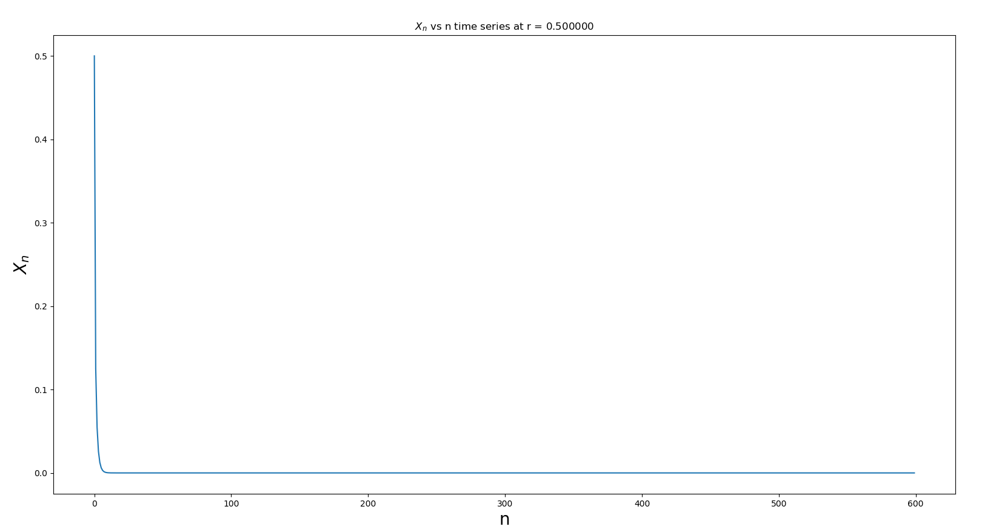
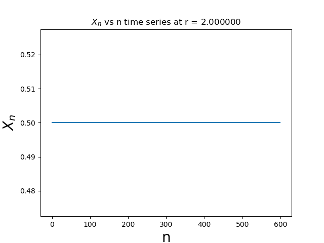
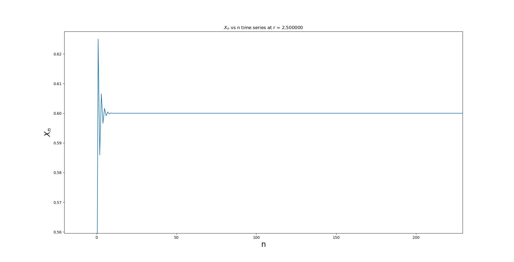
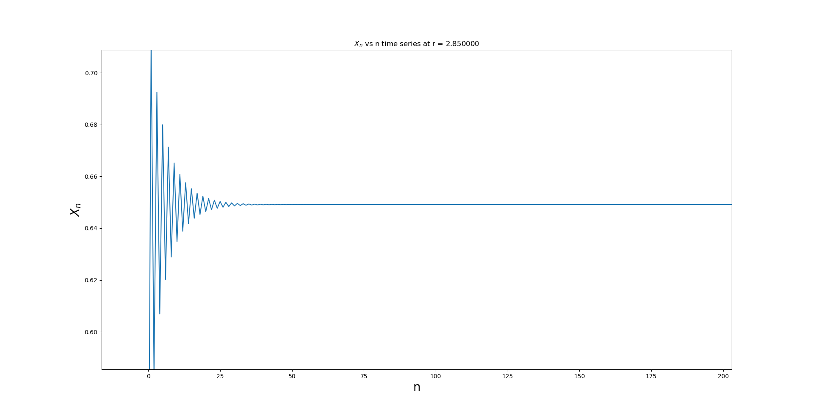
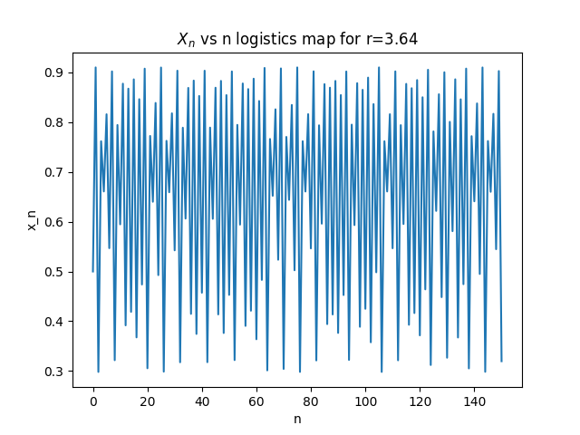
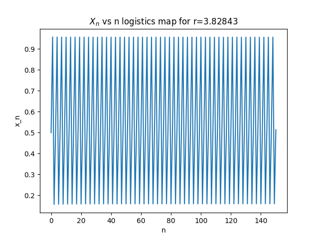
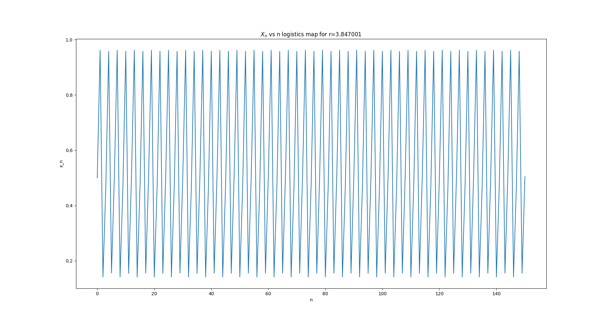
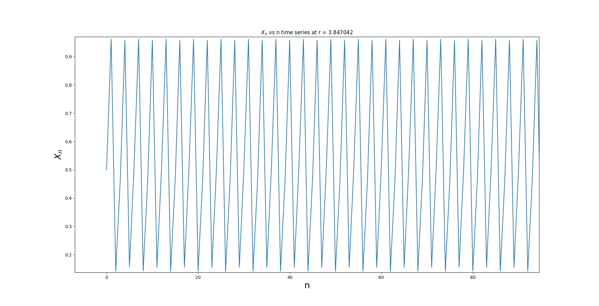
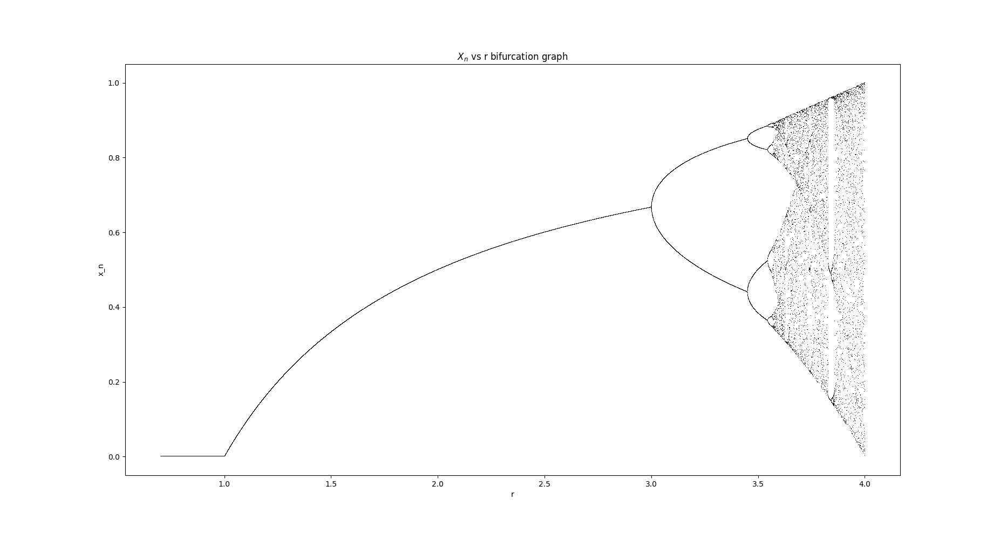

Suggested Method of Viewing the report
Since this is a big report, for your convinience please visit this website to see the report clearly
non-linear-systems-group10
The logistic map is a model of population growth that exhibits many different types of behavior, dependingon the value of a few constants. The equation then, for somepopulation Xn+1 after an arbitrary time step, starting with population Xn is:
Xn+1 = r*Xn*(1 - Xn)
Code used to generate the time series plots:
import numpy as np
import matplotlib.pyplot as plt
def fun(r,x):
return r*x*(1-x)
r_value = 2.85
init_value = 0.5
max_n = 600
xn_values = []
xn_values.append(init_value)
for i in range(1,max_n):
xn_values.append(fun(r_value,xn_values[i-1]))
plt.xlabel('n', fontsize=20)
plt.ylabel(r'$X_n$', fontsize=20)
plt.title(r'$X_n$ vs n time series at r = %f'%(r_value))
plt.plot(range(0,max_n),xn_values)
plt.savefig('timeseries%f.png'%(r_value))
plt.show()
Corresponding graphs with r values ranging from 1 to 4
Graph1 (Done by Abhigna)

Graph2 (Done by Abhigna)
Graph3 (Done by Abhigna)

Graph4 (Done by Abhigna)

Graph5 (Done by Agam)

Graph6 (Done by Agam)

Graph7 (Done by Agam)

Graph8 (Done by Agam)

Graph9 (Done by Kashif)

Graph10 (Done by Kashif)
Graph11 (Done by Kashif)

Graph12 (Done by Aarushi)

Graph13 (Done by Aarushi)

Graph14 (Done by Aarushi)

Graph15 (Done by Aarushi)

Graph16 (Done by Aarushi)

Graph17 (Done by Aarushi)

By Aarushi
| Values | Observation |
|---|---|
| <= 1 | Population Will Die i.e. Xn goes to 0 |
| 1.5 | Gives a Constant Value |
| 2 | Gives a Constant Value |
| 2.5 | Becomes constant after fluctuating for a while |
| 2.789 | Becomes constant after fluctuating for a while |
| 2.85 | Becomes constant after fluctuating for a while |
| 3 | The rate of convergence is less than linear |
| 3.34560 | Oscillates between 2 values : Period 2 |
| 3.5 | Oscillates between 4 values : Period doubles |
| 3.545 | Oscillates between 8 values : Again Period has doubles from before |
| 3.57 | It is chaotic, Can't find repeating values periodically |
| 3.64 | It is Chaotic |
| 3.82843 | should've Oscillated between 3 values but didn't happen |
| 3.9 | Chaotic |
| 4 | Chaotic |
One fine point that we noticed is, after 3.57, a smal change in the value of r can make the system change suddenly from chaotic to stable and vice versa.
Code used by Aarushi
import numpy as np
from matplotlib import pyplot as plt
r = 3.847001
x = np.arange(0,151)
y = [0.5]
for i in range(150):
g = y[-1]
y.append(r*g*(1-g))
plt.xlabel('n', fontsize=10)
plt.ylabel('x_n', fontsize=10)
plt.title(r'$X_n$ vs n logistics map for r=3.847001')
plt.plot(x,y)
plt.show()
Graph by Aarushi Roll number IMT2018001

Code used by Abhigna
import numpy as np
import matplotlib.pyplot as plt
x0=0.5
r=3.847002
X=[]
Y=[]
X.append(0)
Y.append(x0)
count=0
for n in range (1,600):
X.append(n)
Y.append(r*Y[count]*(1-Y[count]))
count=count+1
plt.xlabel('n',fontsize=20)
plt.ylabel('$X_n$',fontsize=20)
plt.title('$X_n$ vs n')
plt.plot(X, Y)
plt.show()
Graph by Abhigna Roll number IMT2018002

Code by Agam
import numpy as np
import matplotlib.pyplot as plt
def fun(r,x):
return r*x*(1-x)
r_value = 2.85
init_value = 0.5
max_n = 600
xn_values = []
xn_values.append(init_value)
for i in range(1,max_n):
xn_values.append(fun(r_value,xn_values[i-1]))
plt.xlabel('n', fontsize=20)
plt.ylabel(r'$X_n$', fontsize=20)
plt.title(r'$X_n$ vs n time series at r = %f'%(r_value))
plt.plot(range(0,max_n),xn_values)
plt.savefig('timeseries%f.png'%(r_value))
plt.show()
Graph by Agam Roll number IMT2018004

Code by Kashif
import numpy as np
import matplotlib.pyplot as plt
r = 3.847042
X = []
X.append(0.5)
for i in range(1,800):
X.append(r*X[i-1]*(1-X[i-1]))
plt.xlabel('n')
plt.ylabel(r'$X_n$')
plt.show()
Graph by Kashif Roll number IMT2018042

A bifucation is a period-doubling, a change from an N-point attractor to a 2N-point attractor, which occurs when the control parameter is changed. A Bifurcation Diagram is a visual summary of the succession of period-doubling produced as r increases. The next figure shows the bifurcation diagram of the logistic map, r along the x-axis. For each value of r the system is first allowed to settle down and then the successive values of x are plotted for a few hundred iterations.
Code 1 used (Written by Agam Kashyap)
import numpy as np
import matplotlib.pyplot as plt
def fun(r,x):
return r*x*(1-x)
def calc(n1,n2,nr,init_value):
r_values = np.linspace(nr,4,1000)
for r in r_values:
alt = []
xn_values = []
alt.append(init_value)
for i in range(1,n1):
alt.append(fun(r,alt[i-1]))
xn_values.append(alt[n1-1])
for i in range(1, n2-n1):
xn_values.append(fun(r,xn_values[i-1]))
xn_values = np.array(xn_values)
r_arr = xn_values*0.0 + r
plt.plot(r_arr,xn_values,'ko',markersize=1)
r_min = 1
plt.xlabel('r', fontsize=20)
plt.axis([r_min,4.0,0,1.0])
plt.title(r'$X_n$ vs r bifurcation graph')
calc(100,200,r_min,0.05)
plt.show()
Bifurcation Graph from Code 1

Code 2 by Aarushi
import matplotlib.pyplot as plt
import numpy as np
P=np.linspace(0.7,4,50000)
m=0.7
X = []
Y = []
for u in P:
X.append(u)
m = np.random.random()
for n in range(1500):
m=(u*m)*(1-m)
Y.append(m)
plt.xlabel('r', fontsize=10)
plt.ylabel('x_n', fontsize=10)
plt.title(r'$X_n$ vs r bifurcation graph')
plt.plot(X, Y, ",", color='k')
plt.show()
Bifurcation Graph from Code2

The first Feigenbaum constant is the limiting ratio of each bifurcation interval to the next between every period doubling, of a one-parameter map
xi+1 = f( xi )
where f(x) is a function parameterized by the bifurcation parameter a.
It is given by the limit
where an are discrete values of a at the n-th period doubling.
Observations (Done by Abhigna and Kashif)
| r1 | r2 | r3 | δ |
|---|---|---|---|
| 3.002 | 3.44912 | 3.53708 | 5.083219645 |
| 3.002 | 3.44912 | 3.54197 | 4.815508885 |
| 3.002 | 3.44668 | 3.54197 | 4.666596705 |
| 3.002 | 3.44668 | 3.53708 | 4.919026549 |
Average value of Feigenbaum constant = 4.871087945999999
Report Made by Agam